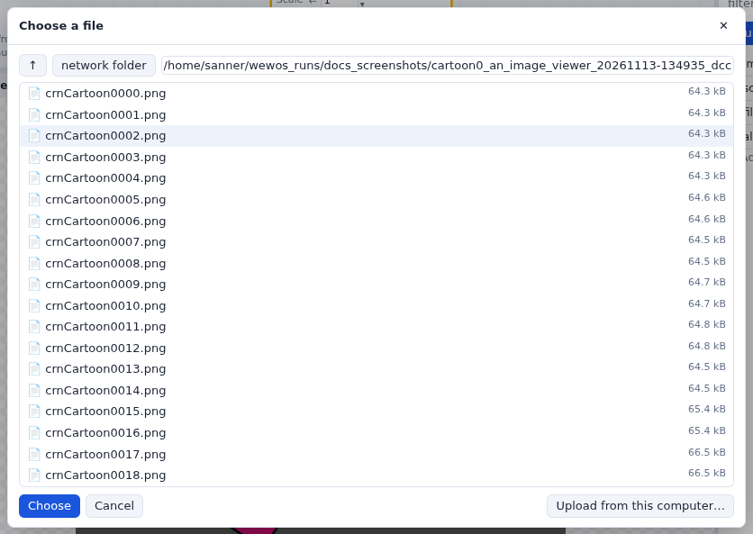
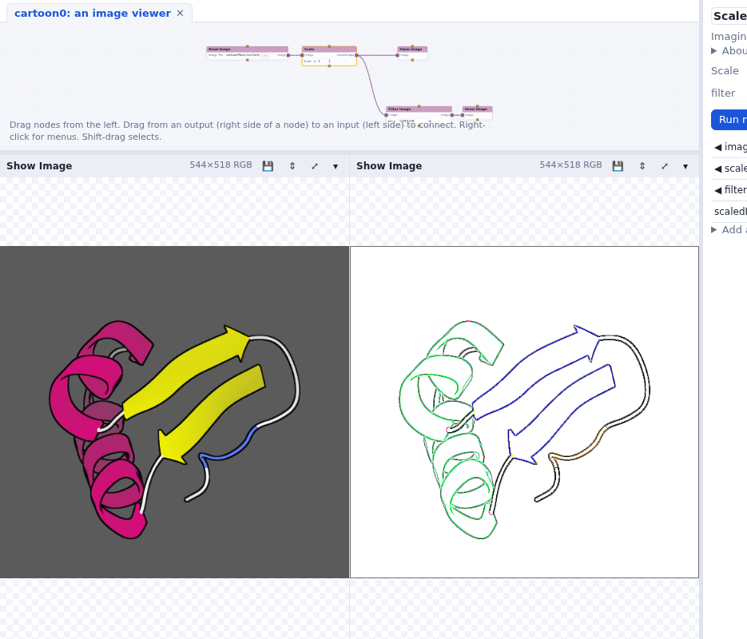

An image viewer
Read an image, scale it and show it; load a library; choose a file; add a filter.
So far we used the Standard library, whose nodes are small utilities. Let's make a small application: an image viewer. Start from start here again (or File > New network if you already have the tutorial data in a folder you know).
Load the Imaging library
- Press Libraries… at the top and load Imaging. It appears in the list on the left, in its own color.
- Type read in Find a node and drag Read Image onto the network. Type show and drag Show Image to its right.
- Connect Read Image's
imageoutput to Show Image'simageinput.
Choose a file
Read Image's filename input has a file widget. Its … button opens a file
browser on the server, in the network's folder; its ⇧ button uploads a file from your own
computer into that folder.

cartoonMovie folder. A file in the
network's folder is given relative to it (cartoonMovie/crnCartoon0000.png), so the
network keeps working when its folder moves.Open cartoonMovie and choose crnCartoon0000.png. The network runs, and
the image appears in a Show Image panel in the row under the network.
Scale it
- Add Scale (Imaging > Mapper) between the two nodes. Show Image's input takes
one connection: right-click the connection from Read Image and choose Delete connection.
Then connect Read Image to Scale's
image, and Scale'sscaledImageto Show Image. - Click Scale. Its widgets are in the parameter column on the right (and on its rows in the node): change Scale and watch the image.

run on change is Vision's immediate mode: when it is checked, every change of a widget runs the network. Uncheck it to change several things, then press Run.
Exercise: the contour
Find a way to extract the contour of the image with a node of the Imaging library, and show the image and its contour side by side.
